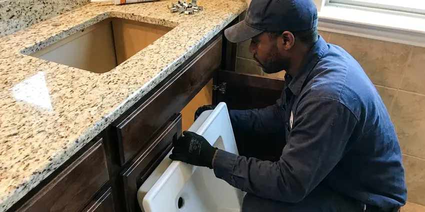

Toilet Installation in South Jordan, UT
Upgrade your bathroom with a new toilet installed right by BPK Plumbing in South Jordan, UT. We handle all types of toilet setups.
- Fair Upfront Pricing
- Licensed Local Plumbers
- Fast, Same-Day Service
- Licensed, Insured Plumbers

Need a New Toilet Installed in South Jordan, UT?
Our skilled technicians are ready to provide prompt and professional service for your home.
Professional Toilet Installation Services in South Jordan, UT
BPK Plumbing installs toilets in new construction, home additions, guest suites and full bathroom remodels. We verify the rough-in distance, set the closet flange at the right height for your finished floor and connect a new shutoff and supply line. Every toilet is leveled, sealed and flush-tested before we go.
Our expertise includes:
- Install standard, comfort height, and wall-mounted toilets.
- Low-flow and high-efficiency toilet upgrades
- Wall-hung carrier and in-wall tank system installation

Additional Bathroom Plumbing Services in South Jordan, UT
From toilets to showers, our bathroom plumbing team in South Jordan, UT handles repairs, installs, and upgrades with tidy, code-compliant work.


Customers
Why Choose BPK Plumbing for Toilet Installation in South Jordan, UT?
Most toilet leaks we are called to fix come from a flange set too low or a toilet that was never leveled. We get those details right at installation so you do not deal with a wet floor later.
- Durability, Our installations focus on long-term durability, using quality parts and tight connections to prevent future problems.
- Level Mounting, Shims and anchored bolts keep the bowl from rocking and breaking its seal.
- Clean Work, We always protect your home during installation and leave the work area clean when finished.
Citywide Coverage
No matter where you are in South Jordan, our licensed plumbers are ready to provide prompt and professional toilet installation. We're committed to delivering reliable plumbing solutions throughout the entire South Jordan, UT area.
Experienced Team
Our plumbing team brings years of focused experience to every toilet installation project. They are trained in the latest techniques and familiar with all major toilet brands and models, ensuring a high-quality job every time.
Safety-First Approach
Every installation meets plumbing code for clearances, typically 15 inches from centerline to side walls and 21 inches of open space in front. We install a new quarter-turn shutoff so the toilet can be isolated easily.
Trusted Certified South Jordan Plumbing Services Professionals
At BPK Plumbing, we take pride in providing certified plumbing services throughout South Jordan, UT. Backed by leading industry credentials, our experienced plumbers combine technical skill with genuine customer care. Whether it is repair, installation, or maintenance, we follow strict safety and quality standards to deliver long-lasting results you can trust.
Call Us Now PHCC Plumbing Contractor Recognition
PHCC Plumbing Contractor Recognition Better Business Bureau (BBB) Accreditation
Better Business Bureau (BBB) Accreditation Angi Certified Pro
Angi Certified Pro ISO 9001 Quality Management Certification
ISO 9001 Quality Management CertificationQuality Toilet Installation Services in South Jordan, UT
Pressure-Assisted Toilet Installation in South Jordan
Pressure-assisted toilets provide a powerful flush, ideal for commercial settings or homes with specific needs. Their installation differs from gravity-fed models, requiring careful attention to the pressure tank and water supply. We make sure all components are correctly fitted and calibrated for best performance. Our plumbers in South Jordan, UT are skilled in setting up these robust systems to prevent water hammer or excessive noise.

Bathroom Remodel Toilet Installation in South Jordan, UT
Remodels often raise the floor with new tile, which can leave the old flange too low. We use flange extenders or replace the flange so the seal compresses properly. If you are moving the toilet, we can relocate the drain, which on a slab foundation requires cutting and patching concrete. We coordinate timing so the toilet goes in after tile and grout have cured.
Comfort-Height and ADA Toilet Installation in South Jordan
Comfort-height toilets put the seat at about 17 to 19 inches, which is easier on knees and backs. For accessible bathrooms, we follow ADA guidelines for seat height, centerline distance from the side wall and grab bar clearance. We can install elongated bowls and add blocking for grab bars while the wall is open. These upgrades are common with homeowners planning to age in place.
Toilet Flange and Wax Ring Replacement in South Jordan, UT
A critical part of any toilet installation is ensuring a proper seal between the toilet and the waste pipe, typically achieved with a wax ring and a secure flange. We carefully replace worn or damaged flanges and install new wax rings during every toilet installation. This prevents leaks and sewer gas from entering your South Jordan, UT home, a common issue with older or poorly installed units.
Smart Toilet and Bidet Installation in South Jordan
Smart toilets and bidet seats from TOTO Washlet, Kohler and Bio Bidet need a water connection and typically a nearby GFCI outlet. We install the T-valve or dedicated supply, mount the seat and test spray, heat and dryer functions. If an outlet is needed, we work with a licensed electrician. We also explain basic maintenance like cleaning the nozzle and filter.
New Construction Toilet Installation in South Jordan
In new homes and additions, we set toilets after the finished floor is in so the flange sits at the right height. We verify the drain is correctly vented and the rough-in matches the fixture you selected. Each toilet gets a new wax or wax-free seal, a stainless supply line and a quarter-turn angle stop. We flush-test and check for leaks before the final inspection.
Toilet Replacement & Upgrades in South Jordan, UT
Upgrading an old, inefficient toilet can greatly improve bathroom looks and water conservation. We handle the complete process of removing your old toilet, disposing of it responsibly, and installing your new, chosen model. Whether you're switching to a dual-flush, low-flow, or a different style, we make sure the transition is smooth and your new toilet fits cleanly into your South Jordan bathroom.

Rough-In Toilet Installation in South Jordan, UT
Installing a toilet in a new bathroom or during a complete renovation often involves 'rough-in' work, which includes setting the waste pipe and water supply lines. Our plumbers are skilled in establishing the correct rough-in dimensions for various toilet types, ensuring future compatibility and proper function. We handle all aspects of the first plumbing setup for your new toilet in South Jordan, UT.
Toilet Installation Near Me in South Jordan, UT
Many South Jordan homes, especially older ones, may have specific plumbing considerations that affect toilet installation. Our local expertise ensures we handle these details effectively, providing installations that last. We're committed to serving our community with the highest standards of plumbing craftsmanship.
If you're searching for 'toilet installation near me' in South Jordan, UT, BPK Plumbing is your local, trusted choice. Our plumbers are familiar with the specific plumbing requirements and common issues found in homes across the South Jordan area. We pride ourselves on quick response times and reliable service.
BPK Plumbing at a Glance
- Fully licensed plumbing team covering South Jordan, UT
- 24/7 emergency service with same-day scheduling
- Clear written estimates, no hidden fees
- 4.8-star rated by 470+ Utah customers
South Jordan Map
South Jordan Information
- Population
- 84,528
- Area codes
- 801/385/435
- Service area
- South Jordan and communities within 40 miles
- Nearby
- West Jordan, Herriman, Sandy, Taylorsville
Fast growth means much of the housing in Utah is relatively new, with PEX supply lines and plastic drains in most recent construction. A properly set flange and level toilet installation in South Jordan, UT protects against leaks that can quietly damage flooring.
Expert Services
Trust our professionals for reliable BPK Plumbing solutions in South Jordan, UT.
Our Specialized Plumbing Services in South Jordan, UT
At BPK Plumbing, we provide a complete range of plumbing services across South Jordan, UT. From leak detection to full system installations, our team ensures fast, precise, and affordable service for both residential and commercial properties. Explore our core services below:


How Our Toilet Installation Process Works in South Jordan, UT
We keep toilet installation simple, predictable and clean from start to finish.
Request a Quote
Contact us at (385) 543-4073 to discuss your toilet installation needs and schedule an appointment. We'll provide a transparent estimate based on your specific requirements.
Old Toilet Removal
Our plumbers will carefully disconnect and remove your existing toilet, ensuring no water spills or damage to your bathroom floor. We also responsibly dispose of the old unit.
New Toilet Setup
We meticulously install your new toilet, ensuring a tight wax ring seal, secure bolt tightening, and correct water supply line connection. We then test for leaks and proper flushing.
Frequently Asked Questions About Toilet Installation in South Jordan
Labor to install a customer-supplied standard toilet typically runs $200 to $400. Including a mid-range toilet, most installs total $450 to $900, while wall-hung systems with carriers range from $1,500 to $3,500 or more. We give you a flat price up front.
Both work when the flange is set correctly. Wax-free foam or rubber seals are more forgiving if the toilet needs repositioning and hold up well in warm bathrooms. We choose based on your flange height and floor type.
Utah water is among the hardest in the country in many areas, and scale builds up quickly in water heaters, faucets and appliances. Hard water can lead to mineral buildup in toilet tanks and bowls over time, affecting performance and requiring more frequent cleaning. While it doesn't directly impact installation, choosing a toilet with a good glaze and strong flush can help limit these effects.
TOTO, Kohler and American Standard reliably perform well in flush tests and have good parts availability. Gerber and Mansfield are solid budget options. We help you match the brand and model to your needs.
The rough-in is the distance from the finished wall to the center of the drain, typically 12 inches but sometimes 10 or 14. Buying a toilet with the wrong rough-in means it will not fit or will sit too far from the wall.
We are experienced in installing all major toilet brands, including Kohler, American Standard, Toto, Delta, Gerber, and many others. Our plumbers are familiar with the specific requirements for each manufacturer to deliver a proper and efficient installation.
Yes, we have experience installing various types of toilets, including those with integrated bidet seats or smart features. These often require specific electrical connections or dedicated water lines, which our plumbers are trained to handle safely and correctly.
When choosing a new toilet, consider factors like bowl shape (round vs. elongated), height (standard vs. ADA-compliant), flushing system (gravity-fed vs. pressure-assisted), water efficiency (gallons per flush), and overall style to match your bathroom. We can help you navigate these choices.
What People Are Saying About Our Plumbing Experts?

Robert G.
The trenchless sewer replacement saved our front yard. They walked us through the camera inspection footage first so we knew exactly what we were paying for.
Sewer Line Replacement · Herriman, UT
Patricia H.
We had a slab leak that two other companies could not find. BPK Plumbing located it in under an hour, explained our options, and the price matched the quote to the dollar.
Slab Leak Repair · Herriman, UT
Laura S.
I scheduled a water heater replacement, and the team made the process smooth and affordable. The new unit works perfectly, and they cleaned up after completing the job.
Water Heater Replacement · Herriman, UT
Daniel K.
A pipe burst at 11 pm and they actually answered. The plumber showed up within the hour, shut everything down, and had us back to normal the next morning. Could not ask for more.
Emergency Plumbing · Herriman, UT
Mark T.
When our office needed drain cleaning, BPK Plumbing provided quick, reliable service. The plumber arrived on time and made sure every drain flowed perfectly before leaving. Very satisfied.
Drain Cleaning · West Jordan, UTJames P.
Our commercial plumbing system had a leak under the sink, and BPK Plumbing handled it professionally. The plumbers arrived quickly and restored everything without disruption to our customers.
Commercial Plumbing · West Jordan, UT